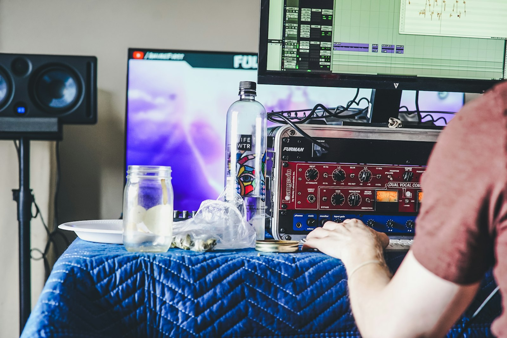
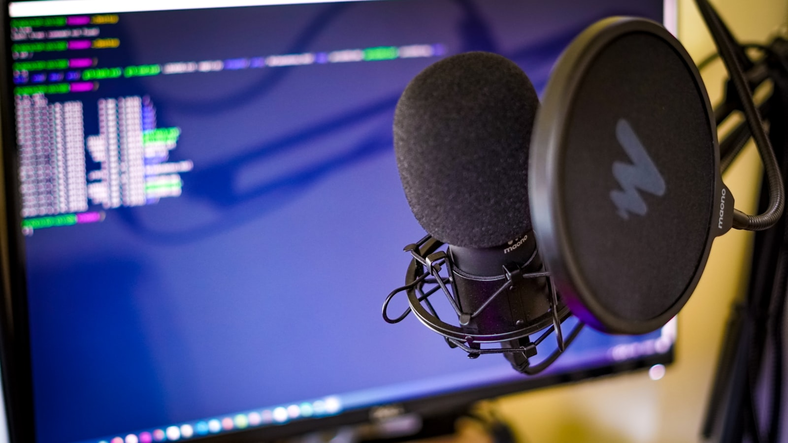

Multi-track OBS audio: a separate mix for your radio broadcast
OBS Studio supports six audio tracks. Most users only ever touch Track 1. The other five are quietly powerful, especially if you broadcast to both video and radio at once.
Published 2026-05-08 / 10 minute read

Why most users never touch Track 2
OBS's audio mixer panel is intentionally simple. Each source has a fader, mute button, and audio level meter. Beneath that simplicity is a six-track routing system that lets you assemble distinct audio mixes for distinct outputs. The reason most streamers never use it is that single-output workflows do not need it. If you only ever stream to Twitch, Track 1 is fine.
The moment you have a second output that wants a different mix, the multi-track system becomes the right tool. Broadcasting to a radio station while video streaming is the canonical case, but the same pattern serves multi-track recording for post-production, separate language feeds, and per-platform clean mixes.
The six-track architecture
OBS routes audio in three layers:
- Sources. Each audio source (mic, music, game audio, browser source) is a separate input.
- Tracks. Each source can be assigned to any combination of Tracks 1 through 6. The assignment is set per-source via
Advanced Audio Properties. - Outputs. Streaming, recording, and plugin outputs each pick one or more tracks to consume.
Tracks have no inherent meaning; they are just labeled buckets. What gives a track meaning is which sources you assign to it and which output consumes it.
Track conventions
Most setups follow conventions to stay readable. None are enforced, but they help when you come back to the project two months later or hand it off to a co-host.
| Track | Convention | Typical contents |
|---|---|---|
| Track 1 | Main video stream mix | Everything: mic, music, game audio, sound effects, callers |
| Track 2 | Radio mix | Just the show: mic, music, callers |
| Track 3 | Mic-only feed | Mic alone, for podcast post-production |
| Track 4 | Music-only feed | Music alone, for cue sheets or rights tracking |
| Track 5 | Backup stream | Same as Track 1, recorded to a backup destination |
| Track 6 | Spare | Reserved for ad-hoc needs |
Pick the conventions that match what you actually do. If you only need two tracks, only use two.
Setting up Advanced Audio Properties
- Open OBS.
- In the Audio Mixer panel, click the gear icon on any source, or use the menu:
Edit > Advanced Audio Properties. - Each source has six checkboxes labeled 1 through 6 (sometimes shown as numbered columns). Check the tracks that source should appear on.
- Confirm volume levels in the gain column. A source can be on multiple tracks; its gain applies the same way to all of them.
- Confirm the "Audio Monitoring" column. "Monitor Only (mute output)" sends to your headphones but not to any track. "Monitor and Output" does both. "Monitor Off" sends to tracks but not to your headphones.
The Advanced Audio Properties dialog stays the source of truth. The Audio Mixer panel only shows volume and mute controls; track assignments live in this dialog.

Worked example: Twitch + community radio
A streamer plays a game on Twitch while broadcasting voice and music to a community Icecast mount. The game audio is irrelevant to radio listeners and would be confusing without the visuals.
| Source | Track 1 (Twitch) | Track 2 (Radio) |
|---|---|---|
| Mic | On | On |
| Music | On | On |
| Game audio | On | Off |
| Discord | On (party chat) | Off (private) |
| Stream alerts | On (whoosh sounds) | Off (irrelevant) |
Settings: Output > Streaming > Audio Track = 1. Radio Streamer dock > Track = 2. Twitch viewers hear the full mix, radio listeners hear voice plus music only.
Worked example: podcast video plus radio simulcast
Two hosts on camera, recorded for YouTube release later, also pushed live to AzuraCast as a radio simulcast. Both audiences hear the same content, but the recorded video benefits from extra fidelity and Track 2 can be a smaller mix for live streaming.
| Source | Track 1 (record) | Track 2 (radio) | Track 3 (mic-only post) |
|---|---|---|---|
| Host 1 mic | On | On | On |
| Host 2 mic | On | On | On |
| Background music | On | On | Off |
| Caller audio | On | On | Off |
Settings: Output > Recording = Multi-track MKV with Tracks 1 and 3 enabled (clean mix plus mic-only fallback for the editor). Radio Streamer dock > Track = 2. The recording captures both the broadcast mix and a clean mic-only track, useful for post-production. The live radio mount goes out from Track 2 in real time.
Common gotchas
Track 2 has nothing on it
The most frequent issue. The Icecast mount connects, listeners hear silence. Open Advanced Audio Properties and confirm at least one source has Track 2 checked.
Source set to "Monitor Only"
Monitor Only routes to headphones but not to tracks. Sources in this mode are inaudible to all outputs. Switch to "Monitor and Output" or "Monitor Off" depending on whether you want to hear the source locally.
Track-level gain confusion
Tracks do not have their own faders or gain controls. Volume is set per-source. To boost a source on Track 2 without affecting Track 1, you would need a Compressor or Gain audio filter applied per-track via OBS plugins, or you just route differently. For most workflows, the same per-source gain applied to both tracks is fine.
Streaming output picks the wrong track
The streaming output's audio track defaults to Track 1, but it is configurable in Settings > Output > Streaming > Audio Track. If your Twitch stream is silent or has the wrong mix, this is usually the cause.
Recording output not capturing all tracks
The recording output writes only the tracks selected in Settings > Output > Recording > Audio Track. To get multiple tracks in one file, the format must be MKV or fragmented MP4 (not standard MP4). After recording, you can remux to MP4 if you need it for distribution.
Test your routing before going live
A short pre-broadcast checklist that catches most problems:
- Set every source's track assignment.
- Mute everything in the Audio Mixer except one source. Speak into the mic. Confirm levels in the right places.
- Unmute one more source at a time. Confirm each new source shows up where it should.
- Start a test recording with the same track configuration you intend to broadcast. Stop after a minute.
- Open the file in a multi-track player or Audacity. Confirm each track has the expected content.
Five minutes of this saves hours of debugging silent broadcasts later.
Wrap up
OBS's six-track audio system is one of the most underused features in the app. Once it clicks, separating a video mix from a radio mix becomes second nature, and you stop fighting OBS over which audio goes where.